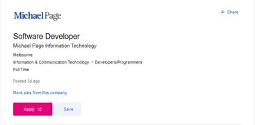

I was born in Australia and grew up in the coastal town of Coffs Harbour. My current education is a diploma in software development and have recently completed an undergraduate in Cyber Security with RMIT.
Last year I had purchased a caravan and have found that I really enjoy fixing up many problems such as removing 1980s stoves and fridges as well as replacing benches, tearing down plywood walls and installing floating floors.
Interest in IT
My Interest in IT is within the software development section I have had a keen interest since programming in QBasic in the late 90s where four of the brightest students in the class where doing amazing things with such little effort and the passion started from there.
As for another reasons for my interest in IT is that the creation of software development requires planning information and researching other information technologies or applications. The interest in IT that I have found more engaging is the programming of data inputs because the whole concept of a databases is that the information needs to be obtained and managing accordingly so this data then becomes the challenge in programming as you need to interpret this data visually as well as professionally viable.
My IT experience starts from basic to being able to build a PC and program in Java. I have coded in C#, Basic and JavaScript. I have also had a go of HTML markup language and CSS.
I Choose RMIT to further my understanding of IT and to push myself to get educated as the learning is in a remote atmosphere and due to work commitments it’s a more flexible option. I hope to learn more of how the industry works and the different paths that the IT sector is going towards as we can never be too complacent as the next new change may be Years, Months or even days away.
Ideal Job

Description
The Job title is for a Software developer and requires someone to be able to develop technologies for the company. The appealing thing about this is that it aims at development in the education sector this is a stable environment that can adapt to change. The other thing that is appealing is that is requires a challenge to get a product to market which is always a great learning opportunity.
Skills Required
The Job requires JavaScript knowledge as the use of mainstream web assets such as Node, react being JavaScript based. The Skills also require the use of cloud-based areas of IT also a common mainstream platform. Skills in adaption to modern technologies.
Skills I Have
I have skills in project management, basic HTLM and CSS as well as Diploma in Software development and a Cert III in ICT communications.
Skills To Work On
Skills to work on is to introduce myself to Node and react as well as investing in time for researching existing technologies and their eventual evolution with the programming skills that I have. Cloud services are common but are something that can improve my knowledge of.
Personality Profile
Online tests are to be taken, and the results are as follows.
Test Result Myers-Briggs Type Indicator
Results of the test where pretty close to my personality but I feel that different times that a test where to be sat may yield slight variants in the data outcome for the test.
The result would reflect on working in a team as a quieter observer or someone who would be happy and not offended for someone else to lead charge with assigning key roles or jobs.
This test should take in account when choosing a team based on an extrovert for communications but someone who had the ability of the nature of people feelings as this is a key aspect to a team of humans regarding social interactions. It is one thing to run the show but another to get others to participate if not respected.